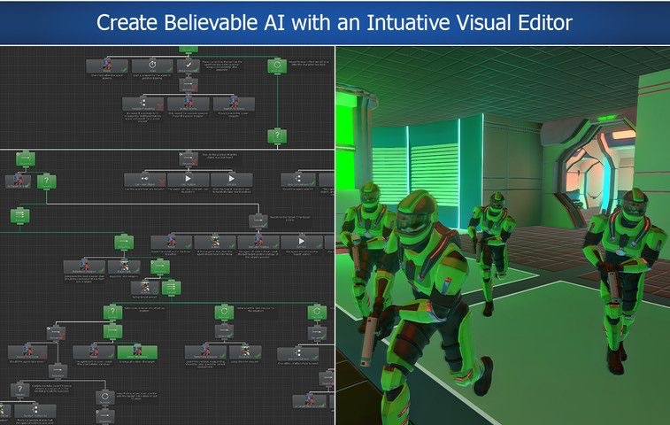
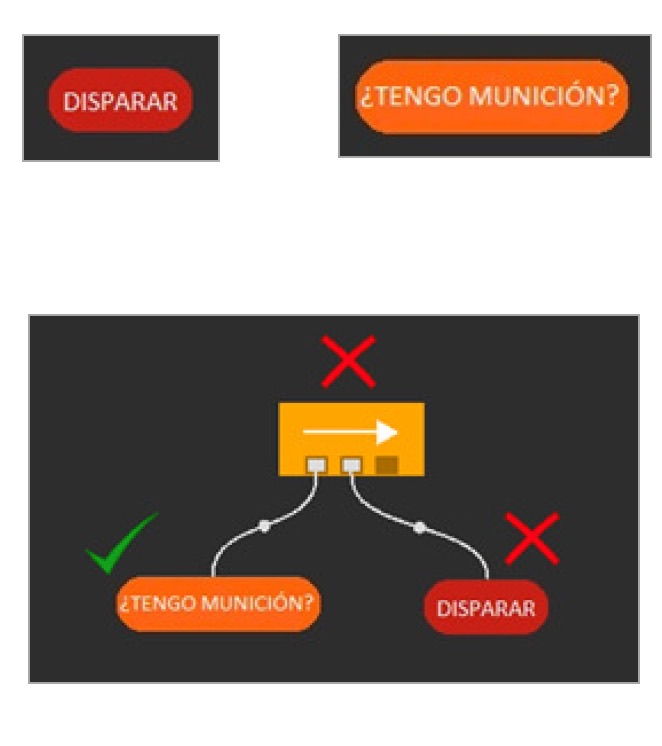
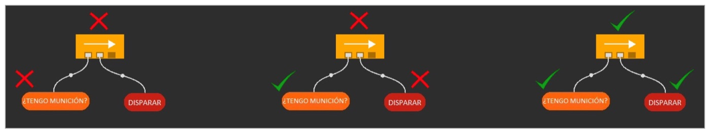
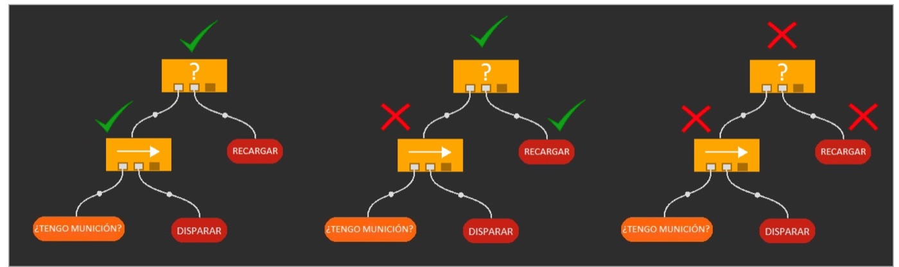
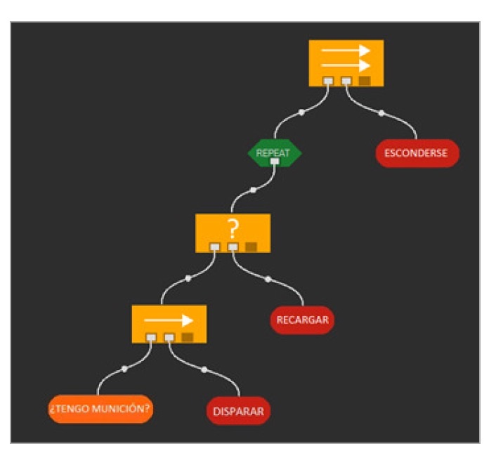

En la página anterior el comportamiento era un conjunto de estados unidos por transiciones: el fantasma está persiguiendo hasta que algo le hace pasar a huir. Funciona muy bien con cuatro estados, y se vuelve inmanejable con veinte, porque cada estado nuevo obliga a pensar sus transiciones con todos los demás. Un árbol de comportamiento organiza lo mismo de otra manera: tareas pequeñas que se combinan en un árbol, y un recorrido del árbol en cada turno que decide qué tarea toca ahora.
Por qué árboles
Son la forma dominante de escribir la inteligencia de los personajes en los motores comerciales, y casi siempre se editan de forma visual: el diseñador arrastra nodos, los conecta y ve el árbol ejecutándose mientras juega.

Lo que se gana respecto a una máquina de estados, y por qué:
- Prototipado e iteraciones rápidas. Cambiar qué va antes que qué es mover una rama de sitio. En una máquina de estados es reescribir las condiciones de varias transiciones.
- Más escalables, mantenibles y versátiles. Añadir un comportamiento es añadir una rama en la posición que marca su prioridad; no hay que decidir cómo se sale de ella hacia cada uno de los demás, porque no se «sale»: en el turno siguiente se vuelve a decidir.
- Tareas sencillas, más reutilizables. Cada hoja hace una sola cosa —«¿soy comestible?», «huir»— y la complejidad sale de combinarlas, no de hacerlas listas.
- Sub-árboles reutilizables entre comportamientos y personajes: la rama de huir es la misma para los cuatro fantasmas, y la de «comer la píldora más cercana» puede colgar de varios sitios del árbol de Ms. Pac-Man.
- Facilidad para añadir tipos de nodo. Un nodo es una clase con un método. El recorrido no cambia por añadir un decorador nuevo.
Una máquina de estados se acuerda: el estado actual es memoria. Un árbol que se recorre desde la raíz en cada turno no se acuerda de nada, así que lo que la máquina sabía por estar en un estado concreto el árbol lo tiene que volver a deducir del juego o tenerlo apuntado en algún sitio. Esa diferencia vuelve en casi todas las secciones de esta página.
Los nodos: hojas, compuestos y decoradores
Todos los nodos, sean del tipo que sean, hacen lo mismo cuando su padre los ejecuta: algo, y después devuelven un estado. Esa es toda la interfaz, y es lo que permite combinarlos sin que ninguno sepa qué tiene debajo.
| Clase | Nodos | Qué hacen |
|---|---|---|
| Tareas (hojas) | Acción, condición | El trabajo de verdad: cambiar algo del juego o preguntar por él. |
| Nodos de decisión (internos) | Secuencia, selector, paralelo, if | Dan el poder expresivo: deciden a qué hijos se ejecuta, en qué orden, y qué se devuelve con lo que devuelven ellos. |
| Decorador | No, repetir, siempre éxito… | Un nodo interno con un solo hijo, que cambia cuándo se ejecuta o qué devuelve. |
| Sub-árbol | Cualquier árbol | Un árbol entero usado como si fuera un nodo más de otro. |

Los estados son tres. SUCCESS y FAILURE son lo esperable: la tarea ha
salido bien o no. RUNNING es «todavía no he terminado», y la sección siguiente explica
por qué hace falta. En los diagramas de esta página los nodos y los estados se dibujan así:
El tick: se recorre desde la raíz
Un árbol no se ejecuta una vez: se ejecuta en cada tick, que es el nombre que recibe cada paso del bucle del juego. En cada tick se llama a la raíz; la raíz llama a los hijos que le toque según su tipo, estos a los suyos, y el estado sube de vuelta hasta arriba. Lo que hayan hecho las acciones visitadas por el camino es la decisión de ese turno.
repeat // un turno del juego
percepción ← leerElJuego()
estado ← tick(raíz, percepción) // el árbol entero, desde arriba
aplicar lo que hayan decidido las acciones visitadas
until fin de la partida
RUNNING existe porque hay acciones que no caben en un tick: una animación, andar hasta
un punto con A*, recargar. Sin él, una acción que acaba de empezar tendría que contestar ya si ha
salido bien, y no lo sabe. Con él contesta «sigo», el padre deja de mirar a los hermanos que
vienen detrás, y en el tick siguiente se vuelve a entrar desde la raíz: si nada
por encima ha cambiado, el camino vuelve a llegar a la misma acción, que continúa.
Qué significa en Ms. Pac-Man
Aquí el tick es cada llamada a getMove: una por turno, con 40 ms de plazo. Y casi
todas las hojas terminan en un solo tick, porque una acción no mueve al personaje: elige
una dirección y la devuelve, y moverlo es cosa del motor. Así que en la práctica
RUNNING casi no aparece, y lo que queda es un árbol que se vuelve a evaluar
entero en cada turno.
Eso tiene una consecuencia que conviene tener muy clara, porque es la diferencia de fondo con la
máquina de estados. La máquina, en cada turno, sólo mira las transiciones que salen del
estado actual: FSM.run recorre las salidas de current y, si
ninguna se cumple, sigue ejecutando el mismo estado. Un fantasma en Huir sigue huyendo
hasta que se cumple una transición que alguien escribió. El árbol, en cambio, vuelve a
comprobar todas las prioridades cada turno: si la condición de huir deja de cumplirse,
simplemente deja de elegirse, y la rama siguiente toma el relevo sin que nadie haya tenido que
escribir esa transición. A esto se le llama comportamiento reactivo.
Con el árbol de Ms. Pac-Man que hay más abajo, en una de las partidas de prueba la rama ganadora fue alternando entre cazar y comer píldoras en cada turno durante 91 turnos seguidos. La causa es la cuenta de ¿me da tiempo a comérmelo?, que estaba justo en el borde. Registrando los valores en otra partida en la que pasó lo mismo:
turno d tiempo 2d + 10 ¿cazar? 602 75 160 160 no 603 74 159 158 sí 604 74 158 158 no 605 73 157 156 sí
El tiempo de comestible baja 1 cada turno; la distancia d baja 1 sólo en turnos
alternos, porque el fantasma huye a media velocidad; así que 2d baja 2 cada dos turnos,
igual que el tiempo. Van en paralelo, y el < estricto se cumple un turno sí y
otro no. En estos turnos no hizo daño porque las dos ramas iban hacia arriba, pero una máquina
de estados no habría cambiado nunca: se habría quedado en Cazar hasta una transición
de salida. La cura es la misma que en electrónica, histéresis: una condición
más exigente para entrar que para seguir, y eso necesita saber qué se hizo el turno anterior.
Acciones y condiciones
Acción
Las acciones modifican el estado del juego: ejecutan una animación, cambian el
estado del personaje —salud, nivel de alerta—, lo desplazan, con o sin A*, o reproducen un sonido.
Hacen falta relativamente muchas, así que interesa que sean
parametrizables: no «ir a la cocina» e «ir al salón», sino «ir a» con el destino
como parámetro. El ChaseAction del proyecto de ejemplo ya lo es: recibe el fantasma
en el constructor y sirve para los cuatro.
Normalmente una acción tiene éxito, pero algunas pueden fallar, y es importante que lo digan: «ir a un lugar» no falla nunca… salvo que no se encuentre camino. En Ms. Pac-Man el fallo típico es no tener objetivo: «ir a la píldora más cercana» cuando ya no queda ninguna. Si esa acción devuelve éxito igualmente, el selector que la contiene no probará la alternativa.
Condición
Las condiciones comprueban alguna propiedad del juego: ¿tengo munición? ¿está
cerca el jugador? Aquí, ¿soy comestible? ¿está Ms. Pac-Man cerca de una píldora de poder?
Devuelven SUCCESS si se cumple y FAILURE si no, y no cambian
nada: sólo miran. Colocadas delante de una acción dentro de una secuencia, hacen de
guarda: la acción sólo se ejecuta si la condición se cumple.
También se puede hacer que una condición se quede ejecutando, devolviendo
RUNNING mientras falle —«espera a que»— o mientras se cumpla —«mientras». Con eso, y
con los compuestos de la sección siguiente, salen todas las estructuras de control de siempre:
| Estructura | Como árbol |
|---|---|
if c then a | Secuencia(c, a) |
if c then a else b | Selector(Secuencia(c, a), b), con un matiz que se ve en el nodo if |
not c | Decorador no(c) |
while c do a | Repetir(Secuencia(c, a)): sale cuando falla c |
esperar hasta c | Una condición que devuelve RUNNING mientras no se cumpla |
Secuencia y selector: un AND y un OR
Secuencia
Ejecuta cada uno de sus hijos en orden. Si uno falla, la secuencia falla ahí mismo, sin ejecutar los que quedan; si todos salen bien, la secuencia también.

¿A qué puerta lógica se parece? A un AND, y en concreto al &&
de Java, que tampoco evalúa el segundo operando si el primero es falso. En el primer caso de la
imagen, Disparar ni se intenta. Por eso las condiciones se ponen delante: una secuencia
es una lista de requisitos seguida de lo que se hace si se cumplen.
Selector
También ejecuta sus hijos en orden, pero al revés: si uno tiene éxito, el selector tiene éxito ahí mismo; si falla, prueba el siguiente; y sólo si han fallado todos, falla. Sirve para dar varias maneras de conseguir el mismo objetivo, y el orden de los hijos es la prioridad: el primero que puede, gana.

La puerta lógica es un OR, el || de Java: si el primero es cierto,
el segundo no se evalúa. Con munición se dispara y no se recarga; sin munición se recarga; y si
tampoco se puede recargar, el selector falla y le toca decidir a su padre.
Juntando los dos, con un hijo A y otro B. La raya quiere decir que
B no llega a ejecutarse:
| A | B | Secuencia(A, B) | Selector(A, B) |
|---|---|---|---|
| SUCCESS | SUCCESS | SUCCESS | SUCCESS · B: — |
| SUCCESS | FAILURE | FAILURE | SUCCESS · B: — |
| FAILURE | SUCCESS | FAILURE · B: — | SUCCESS |
| FAILURE | FAILURE | FAILURE · B: — | FAILURE |
| RUNNING | cualquiera | RUNNING · B: — | RUNNING · B: — |
La última fila es la que hay que recordar: RUNNING corta en los dos. Un hijo que no
ha terminado no ha fallado ni ha salido bien, así que no tiene sentido seguir con sus hermanos. En
pseudocódigo, los dos nodos son el mismo bucle con la condición de corte cambiada:
function tickSecuencia(hijos) for each h in hijos do s ← tick(h) if s ≠ SUCCESS then return s end if // FAILURE o RUNNING: se corta end for return SUCCESS end function function tickSelector(hijos) for each h in hijos do s ← tick(h) if s ≠ FAILURE then return s end if // SUCCESS o RUNNING: se corta end for return FAILURE end function
Esta secuencia empieza siempre por el primer hijo, también si en el tick anterior se quedó en
RUNNING el tercero. Así, las condiciones de delante se vuelven a
comprobar en cada tick, y si dejan de cumplirse la acción en marcha se abandona. Es lo
que se quiere casi siempre, y es lo que se usa en esta página. Muchas bibliotecas ofrecen además
la secuencia con memoria, que retoma desde el hijo que estaba en marcha. Es más
barata, pero ya no reacciona: si el fantasma deja de ser comestible a mitad de la persecución,
nadie lo vuelve a mirar.
Decoradores, paralelo, if y sub-árboles
Decoradores
Son nodos internos con un solo hijo, y cambian cuándo se ejecuta ese hijo o qué se devuelve con lo que devuelve él. Los dos más comunes son el inversor, que devuelve lo contrario que su hijo, un «not», y el supresor, que devuelve el valor deseado venga lo que venga del hijo.

El árbol de la imagen se lee de arriba abajo: primero, repetir el combate —disparar mientras haya munición y, si no, recargar— y, después, esconderse. Cuándo acaba de repetir depende del decorador: un número de veces, o hasta que el hijo falle. Los habituales:
| Decorador | Devuelve | Para qué, aquí |
|---|---|---|
| Inversor (Inverter, no) | Lo contrario del hijo; RUNNING se queda como está. |
«Si no hay ya fantasmas comestibles», sin escribir una condición nueva. |
| Siempre éxito (Succeeder, Supress) | SUCCESS, o el valor fijado, venga lo que venga. |
Una tarea opcional dentro de una secuencia: que su fallo no tumbe la secuencia. |
| Siempre fallo (Failer) | FAILURE, venga lo que venga. |
Ejecutar algo dentro de un selector y seguir probando los hermanos. |
| Repetir n (Repeat) | RUNNING hasta completar n ejecuciones. |
Acciones de varios pasos; aquí se usa poco, porque cada acción acaba en un turno. |
| Hasta que falle (UntilFail) | RUNNING mientras el hijo salga bien. |
El «while» de la sección anterior. |
| Enfriamiento (Cooldown) | FAILURE sin ejecutar al hijo durante n turnos tras un éxito. |
Que un fantasma no cambie de objetivo más de una vez cada tantos turnos. |
| Límite (Limit) | FAILURE cuando el hijo ya se ha ejecutado n veces. |
Algo que sólo se hace una vez por vida o por nivel. |
Los tres últimos tienen algo que los demás no: memoria. Un enfriamiento tiene que acordarse de cuándo tuvo éxito su hijo. Eso vive dentro del propio nodo, y es el motivo por el que más abajo cada fantasma tiene su propio árbol y no comparten uno.
Paralelo
Ejecuta todos sus hijos en el mismo tick, y lo que devuelve lo fija su
política: con éxito cuando tienen éxito todos o cuando lo tiene uno, y con fallo
cuando falla uno o cuando fallan todos. Mientras no se decida, devuelve RUNNING. Su uso
clásico es una acción larga junto a una condición que la vigila: «ir a por el fantasma» en paralelo
con «¿sigue siendo comestible?», con la política de fallar en cuanto falle uno.
En Ms. Pac-Man hay que usarlo con cuidado por una razón muy concreta: cada turno se devuelve un solo movimiento. Dos acciones en paralelo escriben las dos su dirección y gana la última. Y como aquí las acciones duran un turno, la vigilancia sale gratis: una secuencia con la condición delante ya se comprueba en cada tick.
If
If(c, entonces, si no) parece lo mismo que
Selector(Secuencia(c, entonces), si no), y casi lo es. La
diferencia está en qué pasa cuando c se cumple pero entonces falla: el
selector lo toma como un fallo de la primera opción y prueba si no; el
if devuelve ese fallo y no prueba nada más. Si huir falla porque no hay adónde, ¿queréis
que el fantasma pase a perseguir? Esa pregunta decide cuál de los dos se usa.
Sub-árboles
Un sub-árbol es un árbol usado como un nodo más de otro. Es la forma de reutilizar: la rama de huir
se escribe una vez y cuelga de los cuatro fantasmas. En Java no necesita clase propia: un método que
construye y devuelve un Node ya es un sub-árbol.
Un tick, paso a paso
Con eso ya se puede leer un árbol de verdad. Este es el de la Ms. Pac-Man que se programa más abajo, en un turno real de una partida de prueba: hay un perseguidor cerca y no hay ningún fantasma comestible. Los números son el orden de visita, y a la derecha, lo que devolvió cada nodo.
| # | Nodo | Devuelve | Por qué |
|---|---|---|---|
| 1 | ? ms. pac-man | — | La raíz: prueba sus tres hijos en orden de prioridad. |
| 2 | → cazar | — | Primera prioridad; empieza por su guarda. |
| 3 | ¿comestible al alcance? | FAILURE | No hay ningún comestible. Cazar falla sin visitar ir a por él. |
| 4 | → escapar | — | El selector raíz prueba el siguiente hijo. |
| 5 | ¿perseguidor cerca? | SUCCESS | Hay uno a menos de 20 pasos: se sigue dentro de escapar. |
| 6 | ? ¿cómo? | — | Dos maneras de escapar, en orden. |
| 7 | → a la píldora de poder | — | La mejor manera, si se puede. |
| 8–9 | no (¿ya hay comestibles?) | SUCCESS | La condición falla, el inversor lo convierte en éxito: no se está malgastando una píldora. |
| 10 | ¿PPill antes que él? | FAILURE | La píldora está más lejos que el fantasma. La secuencia 7 falla sin visitar ir a la PPill. |
| 11 | huir | SUCCESS | Escribe la dirección que se aleja del fantasma. Sube el éxito: ¿cómo?, escapar y la raíz. |
Tres cosas que se ven en la traza y que vale la pena fijar. Ir a por él no se visita por el cortocircuito de la secuencia: su guarda falló. Comer píldoras no se visita por el cortocircuito del selector: una rama anterior tuvo éxito, y el orden de los hijos de la raíz es la prioridad. Y la única acción que se ha ejecutado es huir, que es la decisión de este turno; si en el siguiente el perseguidor se ha alejado, el mismo recorrido llegará hasta comer píldoras sin que haya que escribir ninguna transición.
La pizarra, y cómo lo hacen Unity y Unreal
Los dos motores comerciales grandes traen árboles de comportamiento, y cada uno enseña una idea que conviene llevarse.

En Unity, según la ruta de carpetas de la captura, el editor es Behavior Bricks. La raíz es un
selector de prioridad cuyos hijos van guardados por una condición: de noche,
dormir; con el objetivo cerca, disparar o acercarse; y si no, AlwaysTrue y deambular,
que es la rama por defecto. En la paleta de abajo están los compuestos y decoradores de esta página
—paralelo, secuencia, selector, versiones aleatorias, Not, Repeat—, y el
inspector de la derecha enseña dos cosas: la descripción de Shoot dice que
no termina nunca (un RUNNING perpetuo, que sólo interrumpe una rama de
más prioridad), y cada parámetro de entrada se marca como CONSTANT o como
BLACKBOARD.

Unreal lo lleva más lejos. El árbol está atado a una pizarra
(blackboard), FollowerBlackBoard: una memoria compartida con claves
como TargetToFollow o HomeLocation. Los decoradores azules son
condiciones sobre esas claves —isTargetSet: «TargetToFollow is Set»—; las tareas moradas
las leen o las escriben —SetTargetNull borra el objetivo—; y el
servicio verde, AgroCheck, se ejecuta cada 0,5 s y es el que
mira el mundo y apunta en la pizarra a quién seguir. Además, Unreal no recorre el árbol desde la
raíz en cada fotograma: es dirigido por eventos, y un decorador con aborts
vigila su clave y corta la rama en marcha cuando cambia. El efecto es el de nuestra secuencia sin
memoria, más barato cuando hay muchos personajes.
La pizarra resuelve un problema de diseño: una condición no tiene por qué saber quién escribió el
dato que mira. En el motor de Ms. Pac-Man no hay pizarra, pero tenemos las piezas, y
es.ucm.fdi.ici.Input es la principal. Es una clase abstracta del motor cuyo
constructor guarda el Game y llama a parseInput(), donde vuestra subclase
saca del juego lo que necesiten las condiciones, una vez por turno:
| En Unreal | Aquí |
|---|---|
| Servicio que mira el mundo y rellena claves | parseInput() de vuestra subclase de Input: se ejecuta al principio de cada getMove. |
| Claves que leen los decoradores | Los campos de esa subclase, GhostsInput o MsPacManInput: las condiciones sólo leen de ahí. |
| Claves que escriben las tareas | El movimiento elegido, bb.move en la clase Blackboard de más abajo: es la salida del árbol. |
| Claves que duran más de un turno | Campos del controlador, que se le pasan al Input al construirlo: el turno en que murió Ms. Pac-Man. |
Input llama a parseInput() desde su constructor, y en Java los
inicializadores de campo de la subclase se ejecutan después de que vuelva
super(game). Si escribís private int distancia = 0;,
parseInput() rellena el campo y el inicializador lo vuelve a poner a cero justo
después. Los campos de un Input se declaran sin valor y se crean dentro de
parseInput().
De la máquina de estados al árbol
Esta es la máquina de estados de los fantasmas, la misma que se trabaja en la página anterior:
Para pasarla a árbol hay una receta que funciona casi siempre. Cada estado se convierte en una rama: una secuencia con una condición de guarda y la acción del estado. La guarda contesta «¿cuándo debería estar en este estado?», y se saca de las transiciones que entran en él. Las ramas cuelgan de un selector raíz por orden de prioridad, y la última, el comportamiento por defecto, va sin condición.
El orden no es arbitrario. Encerrado va primero porque en la cárcel no se decide nada. Huir va antes que aleatorio porque un fantasma comestible huye aunque Ms. Pac-Man acabe de morir. Y perseguir va al final, sin guarda, porque es lo que se hace cuando no pasa nada de lo anterior. Las transiciones de vuelta desaparecen: «no comestible y Ms. Pac-Man lejos de una PPill» ya no hace falta escribirla, porque es justo lo que pasa cuando la guarda de huir falla.
Lo que no se traduce solo es aleatorio. Se entra en él por un suceso, la
muerte de Ms. Pac-Man, y un suceso no es algo que se pueda comprobar en el turno siguiente:
game.wasPacManEaten() sólo es cierto en el turno en que ocurre. La máquina se acordaba
porque estaba en ese estado; el árbol necesita memoria. Se apunta el turno de la muerte en un campo
del controlador, y la guarda pregunta si han pasado menos de 150 turnos. Y hay otro detalle del
motor: tras una muerte, Ms. Pac-Man reaparece en el acto y los fantasmas vuelven a la cárcel,
de la que salen a los 40, 60, 80 y 100 turnos en el primer nivel. La transición «reaparece» del
diagrama no tiene equivalente directo, así que la ventana de 150 es una decisión nuestra: da a cada
fantasma entre 50 y 110 turnos de despiste al salir.
| Máquina de estados | Jerárquica | Árbol de comportamiento | |
|---|---|---|---|
| Cada turno se mira | Las transiciones que salen del estado actual. | Las del estado actual y las de los estados que lo contienen. | El árbol entero desde la raíz, con cortocircuito. |
| Memoria | El estado actual. | El estado actual en cada nivel. | Ninguna por defecto: la pizarra y los nodos que la llevan. |
| Prioridades | Repartidas por las transiciones. | Mejor agrupadas: las del nivel de fuera mandan. | Explícitas: el orden de los hijos. |
| Añadir un comportamiento | Un estado y sus transiciones con los demás. | Un estado dentro del grupo que toca. | Una rama en su posición. |
| Reutilizar | Difícil: los estados están atados por sus transiciones. | Sub-máquinas enteras. | Cualquier sub-árbol. |
| Va bien cuando | Pocos modos claros, que duran y cambian por sucesos. | Modos agrupables en niveles. | Muchas reglas con prioridad que hay que revisar cada turno. |
| Falla cuando | Crece: espagueti de transiciones. | Las transiciones cruzan de un grupo a otro. | Hace falta historia: parpadea o hay que llenarlo de memoria. |
No son excluyentes, y en los juegos se mezclan: un estado de una máquina puede ejecutar un árbol, y una hoja de un árbol puede ser una pequeña máquina de estados que se acuerda de en qué fase está.
Un árbol mínimo en Java
El motor trae un paquete para máquinas de estados, es.ucm.fdi.ici.fsm, pero ninguno
para árboles. No hace falta una biblioteca: lo esencial cabe en nueve clases cortas. Van en un
paquete bt dentro de vuestro paquete de grupo, con el mismo esqueleto que el proyecto
de ejemplo de la Práctica 2, y reutilizan las dos interfaces del motor que ya conocéis:
es.ucm.fdi.ici.Input y es.ucm.fdi.ici.Action. Todo el código de esta
sección y la siguiente está compilado contra el motor y probado en partidas sin ventana.
grupoYY/ ├── Ghosts.java controlador de los fantasmas ├── MsPacMan.java controlador de Ms. Pac-Man ├── bt/ el árbol: no sabe nada de Ms. Pac-Man │ ├── Status.java Node.java Blackboard.java │ ├── Sequence.java Selector.java Inverter.java Cooldown.java │ └── Condition.java ActionLeaf.java ├── ghosts/ │ ├── GhostsInput.java │ └── actions/ ChaseAction.java RunAwayAction.java las del ejemplo, sin tocar └── mspacman/ └── MsPacManInput.java
Status y Node
Los tres estados, y la clase de la que heredan todos los nodos. tick es lo que llaman
los padres y es final: apunta el nodo en la traza, lo ejecuta y apunta lo que devolvió.
Cada tipo de nodo sólo escribe run. Separarlos así da la traza gratis a todos los nodos,
también a los que escribáis vosotros.
package es.ucm.fdi.ici.c2627.practica2.grupoYY.bt;
public enum Status { SUCCESS, FAILURE, RUNNING }package es.ucm.fdi.ici.c2627.practica2.grupoYY.bt;
public abstract class Node {
private final String name;
protected Node(String name) {
this.name = name;
}
// Lo que llaman los padres: apunta el nodo en la traza, lo ejecuta y apunta lo que devolvió
public final Status tick(Blackboard bb) {
int line = bb.open(name);
Status status = run(bb);
bb.close(line, status);
return status;
}
// Lo que hace cada tipo de nodo
protected abstract Status run(Blackboard bb);
@Override
public String toString() {
return name;
}
}Blackboard
Lo que viaja por el árbol durante un tick: el Input de este turno, que se lee, y
move, donde escribe la acción que llegue a ejecutarse. Se crea uno nuevo en cada
getMove, así que move empieza a null y, si no se ejecuta
ninguna acción, se queda así. El resto es la traza: con traced a
false no se apunta nada y no cuesta nada.
package es.ucm.fdi.ici.c2627.practica2.grupoYY.bt;
import java.util.ArrayList;
import java.util.List;
import es.ucm.fdi.ici.Input;
import pacman.game.Constants.MOVE;
public class Blackboard {
public final Input in; // lo que se ha leído del juego este turno
public MOVE move; // lo que escribe la acción que llegue a ejecutarse
private final List<String> trace; // null: sin traza
private int depth;
public Blackboard(Input in, boolean traced) {
this.in = in;
this.trace = traced ? new ArrayList<>() : null;
}
int open(String name) {
if (trace == null) return -1;
trace.add(" ".repeat(depth++) + name);
return trace.size() - 1;
}
void close(int line, Status status) {
if (line < 0) return;
depth--;
trace.set(line, trace.get(line) + " " + status);
}
public String trace() {
return trace == null ? "" : String.join("\n", trace);
}
}Sequence y Selector
El pseudocódigo de la sección 05, casi línea a línea. Los hijos se pasan en el constructor, así que el árbol se escribe como una expresión anidada que se lee igual que el dibujo.
package es.ucm.fdi.ici.c2627.practica2.grupoYY.bt;
public class Sequence extends Node {
private final Node[] children;
public Sequence(String name, Node... children) {
super(name);
this.children = children;
}
@Override
protected Status run(Blackboard bb) {
for (Node child : children) {
Status s = child.tick(bb);
if (s != Status.SUCCESS) return s; // FAILURE o RUNNING: aquí se corta
}
return Status.SUCCESS; // han salido bien todos
}
}package es.ucm.fdi.ici.c2627.practica2.grupoYY.bt;
public class Selector extends Node {
private final Node[] children;
public Selector(String name, Node... children) {
super(name);
this.children = children;
}
@Override
protected Status run(Blackboard bb) {
for (Node child : children) {
Status s = child.tick(bb);
if (s != Status.FAILURE) return s; // SUCCESS o RUNNING: aquí se corta
}
return Status.FAILURE; // han fallado todos
}
}Inverter y Cooldown
Dos decoradores. El inversor no tiene estado. El enfriamiento sí: readyAt es el turno
a partir del cual vuelve a dejar pasar, y por eso una instancia de un árbol con enfriamientos no se
puede compartir entre fantasmas. Mide el tiempo con getTotalTime() del juego, no con el
reloj, para que no dependa de lo rápido que vaya la partida.
package es.ucm.fdi.ici.c2627.practica2.grupoYY.bt;
public class Inverter extends Node {
private final Node child;
public Inverter(Node child) {
super("no");
this.child = child;
}
@Override
protected Status run(Blackboard bb) {
switch (child.tick(bb)) {
case SUCCESS: return Status.FAILURE;
case FAILURE: return Status.SUCCESS;
default: return Status.RUNNING; // lo que aún no ha terminado no se invierte
}
}
}package es.ucm.fdi.ici.c2627.practica2.grupoYY.bt;
public class Cooldown extends Node {
private final Node child;
private final int ticks;
private int readyAt = 0; // memoria del nodo: por eso cada fantasma lleva su árbol
public Cooldown(int ticks, Node child) {
super("enfriamiento " + ticks);
this.child = child;
this.ticks = ticks;
}
@Override
protected Status run(Blackboard bb) {
int now = bb.in.getGame().getTotalTime();
if (now < readyAt) return Status.FAILURE; // aún en espera: ni se mira al hijo
Status s = child.tick(bb);
if (s == Status.SUCCESS) readyAt = now + ticks;
return s;
}
}Condition y ActionLeaf
Las dos hojas son genéricas en el tipo de vuestro Input, para que las lambdas lo
reciban ya como GhostsInput o MsPacManInput y no haya que convertirlo en
cada una. La condición es un Predicate: se puede escribir en línea al construir el
árbol, sin una clase por condición como las Transition de la máquina de estados.
package es.ucm.fdi.ici.c2627.practica2.grupoYY.bt;
import java.util.function.Predicate;
import es.ucm.fdi.ici.Input;
public class Condition<I extends Input> extends Node {
private final Predicate<I> test;
public Condition(String name, Predicate<I> test) {
super(name);
this.test = test;
}
@Override
@SuppressWarnings("unchecked")
protected Status run(Blackboard bb) {
return test.test((I) bb.in) ? Status.SUCCESS : Status.FAILURE;
}
}
La hoja de acción tiene dos constructores. El primero envuelve una es.ucm.fdi.ici.Action
del motor, la misma que pondríais en un SimpleState, así que ChaseAction y
RunAwayAction del ejemplo se usan sin tocarlas. El segundo recibe una lambda que lee
directamente vuestro Input. Y si la acción devuelve null, la hoja
falla: es la forma de decir «no he sabido decidir» y dejar que el selector de
encima pruebe otra cosa.
package es.ucm.fdi.ici.c2627.practica2.grupoYY.bt;
import java.util.function.Function;
import es.ucm.fdi.ici.Action;
import es.ucm.fdi.ici.Input;
import pacman.game.Constants.MOVE;
public class ActionLeaf<I extends Input> extends Node {
private final Function<I, MOVE> action;
// Una acción del motor, la misma que usaríais en un estado de la FSM
public ActionLeaf(Action a) {
this(a.getActionId(), in -> a.execute(in.getGame()));
}
// O una lambda que lee directamente vuestro Input
public ActionLeaf(String name, Function<I, MOVE> action) {
super(name);
this.action = action;
}
@Override
@SuppressWarnings("unchecked")
protected Status run(Blackboard bb) {
MOVE m = action.apply((I) bb.in);
if (m == null) return Status.FAILURE; // no ha sabido decidir: que pruebe otro
bb.move = m;
return Status.SUCCESS;
}
}Los fantasmas y Ms. Pac-Man con árboles
GhostsInput
Todo lo que preguntan las condiciones de los fantasmas, calculado una vez por turno y para los
cuatro: si cada uno es comestible o está en la cárcel, lo que le falta a Ms. Pac-Man para la
píldora de poder activa más cercana y cuántos turnos han pasado desde que murió. Este último es el
dato con memoria, y por eso llega por el constructor y se asigna después de super, no
en parseInput().
package es.ucm.fdi.ici.c2627.practica2.grupoYY.ghosts;
import java.util.EnumMap;
import es.ucm.fdi.ici.Input;
import pacman.game.Constants.GHOST;
import pacman.game.Game;
public class GhostsInput extends Input {
// Sin inicializar aquí: parseInput() se ejecuta dentro de super(game),
// antes que los inicializadores de campo, que lo machacarían después
private EnumMap<GHOST, Boolean> edible;
private EnumMap<GHOST, Integer> lairTime;
private int pacmanToPPill;
private int ticksSinceDeath;
public GhostsInput(Game game, int lastDeath) {
super(game); // llama a parseInput()
this.ticksSinceDeath = game.getTotalTime() - lastDeath;
}
@Override
public void parseInput() {
edible = new EnumMap<>(GHOST.class);
lairTime = new EnumMap<>(GHOST.class);
for (GHOST g : GHOST.values()) {
edible.put(g, game.isGhostEdible(g));
lairTime.put(g, game.getGhostLairTime(g));
}
int pacman = game.getPacmanCurrentNodeIndex();
pacmanToPPill = Integer.MAX_VALUE;
for (int pp : game.getActivePowerPillsIndices())
pacmanToPPill = Math.min(pacmanToPPill, game.getShortestPathDistance(pacman, pp));
}
public boolean isEdible(GHOST g) { return edible.get(g); }
public boolean inLair(GHOST g) { return lairTime.get(g) > 0; }
public int getPacmanToPPill() { return pacmanToPPill; }
public int getTicksSinceDeath() { return ticksSinceDeath; }
}Ghosts
buildTree(g) es el diagrama de la sección 09 escrito en Java, y se llama una vez
por fantasma: cuatro árboles iguales pero independientes. getMove hace tres cosas:
apuntar la muerte si ha ocurrido, leer el juego una vez con GhostsInput, y dar un tick
a cada árbol con su propia pizarra para recoger su movimiento.
package es.ucm.fdi.ici.c2627.practica2.grupoYY;
import java.util.EnumMap;
import java.util.Random;
import es.ucm.fdi.ici.c2627.practica2.grupoYY.bt.*;
import es.ucm.fdi.ici.c2627.practica2.grupoYY.ghosts.GhostsInput;
import es.ucm.fdi.ici.c2627.practica2.grupoYY.ghosts.actions.ChaseAction;
import es.ucm.fdi.ici.c2627.practica2.grupoYY.ghosts.actions.RunAwayAction;
import pacman.controllers.GhostController;
import pacman.game.Constants.GHOST;
import pacman.game.Constants.MOVE;
import pacman.game.Game;
public class Ghosts extends GhostController {
static final int PPILL_NEAR = 30; // el mismo umbral que PacManNearPPillTransition
static final int AFTER_DEATH = 150; // turnos de despiste tras comerse a Ms. Pac-Man
public static boolean TRACE = false; // traza de BLINKY cuando le toca decidir
private final EnumMap<GHOST, Node> trees = new EnumMap<>(GHOST.class);
private final Random rnd = new Random();
private int lastDeath = -1_000; // memoria que dura más de un turno
public Ghosts() {
setName("Ghosts BT");
for (GHOST g : GHOST.values())
trees.put(g, buildTree(g));
}
private Node buildTree(GHOST g) {
return new Selector("fantasma " + g,
new Sequence("encerrado",
new Condition<GhostsInput>("¿en la cárcel?", in -> in.inLair(g)),
new ActionLeaf<GhostsInput>("esperar", in -> MOVE.NEUTRAL)),
new Sequence("huir",
new Selector("¿peligro?",
new Condition<GhostsInput>("¿comestible?", in -> in.isEdible(g)),
new Condition<GhostsInput>("¿Ms. Pac-Man junto a una PPill?",
in -> in.getPacmanToPPill() < PPILL_NEAR)),
new ActionLeaf<GhostsInput>(new RunAwayAction(g))),
new Sequence("aleatorio",
new Condition<GhostsInput>("¿acaba de morir Ms. Pac-Man?",
in -> in.getTicksSinceDeath() < AFTER_DEATH),
new ActionLeaf<GhostsInput>("moverse al azar", in -> randomMove(in.getGame(), g))),
new ActionLeaf<GhostsInput>(new ChaseAction(g)));
}
private MOVE randomMove(Game game, GHOST g) {
if (!game.doesGhostRequireAction(g)) return MOVE.NEUTRAL;
MOVE[] moves = game.getPossibleMoves(game.getGhostCurrentNodeIndex(g),
game.getGhostLastMoveMade(g));
return moves[rnd.nextInt(moves.length)];
}
@Override
public void preCompute(String opponent) {
lastDeath = -1_000;
}
@Override
public EnumMap<GHOST, MOVE> getMove(Game game, long timeDue) {
if (game.wasPacManEaten()) lastDeath = game.getTotalTime();
GhostsInput in = new GhostsInput(game, lastDeath); // se lee el juego una vez
EnumMap<GHOST, MOVE> result = new EnumMap<>(GHOST.class);
for (GHOST g : GHOST.values()) {
boolean traced = TRACE && g == GHOST.BLINKY && game.doesGhostRequireAction(g);
Blackboard bb = new Blackboard(in, traced);
trees.get(g).tick(bb); // un tick, desde la raíz
result.put(g, bb.move);
if (traced) System.out.println("t=" + game.getTotalTime() + "\n" + bb.trace());
}
return result;
}
}
Se tickean los cuatro árboles todos los turnos, también cuando el fantasma no puede decidir, para que
el árbol sea el mismo que el diagrama: las acciones del ejemplo ya devuelven NEUTRAL
cuando doesGhostRequireAction es falso. Si el tiempo apretara, lo primero sería
saltarse el tick de los que no deciden.
MsPacManInput y MsPacMan
El árbol de la traza. El Input busca de una vez la píldora y la
píldora de poder más cercanas, el perseguidor más cercano —midiendo lo que tarda él en
llegar, sin darse la vuelta— y el comestible más cercano. Los campos son públicos para que las lambdas
del árbol se lean sin una línea de getters.
package es.ucm.fdi.ici.c2627.practica2.grupoYY.mspacman;
import es.ucm.fdi.ici.Input;
import pacman.game.Constants.DM;
import pacman.game.Constants.GHOST;
import pacman.game.Game;
public class MsPacManInput extends Input {
public int pacman;
public int nearestPill; // -1 si no queda ninguna
public int nearestPPill, ppillDistance; // -1 y MAX_VALUE si no queda ninguna
public GHOST danger; public int dangerDistance; // el perseguidor más cercano
public GHOST prey; public int preyDistance; // el comestible más cercano
public boolean anyEdible;
public MsPacManInput(Game game) {
super(game);
}
@Override
public void parseInput() {
pacman = game.getPacmanCurrentNodeIndex();
nearestPill = game.getClosestNodeIndexFromNodeIndex(pacman, game.getActivePillsIndices(), DM.PATH);
nearestPPill = game.getClosestNodeIndexFromNodeIndex(pacman, game.getActivePowerPillsIndices(), DM.PATH);
ppillDistance = nearestPPill < 0 ? Integer.MAX_VALUE
: game.getShortestPathDistance(pacman, nearestPPill);
danger = prey = null;
dangerDistance = preyDistance = Integer.MAX_VALUE;
anyEdible = false;
for (GHOST g : GHOST.values()) {
if (game.getGhostLairTime(g) > 0) continue;
int node = game.getGhostCurrentNodeIndex(g);
if (game.isGhostEdible(g)) {
anyEdible = true;
int d = game.getShortestPathDistance(pacman, node);
if (d < preyDistance) { prey = g; preyDistance = d; }
} else {
// lo que tarda él en llegar a mí, sin darse la vuelta
int d = game.getShortestPathDistance(node, pacman, game.getGhostLastMoveMade(g));
if (d < dangerDistance) { danger = g; dangerDistance = d; }
}
}
}
}package es.ucm.fdi.ici.c2627.practica2.grupoYY;
import es.ucm.fdi.ici.c2627.practica2.grupoYY.bt.*;
import es.ucm.fdi.ici.c2627.practica2.grupoYY.mspacman.MsPacManInput;
import pacman.controllers.PacmanController;
import pacman.game.Constants.DM;
import pacman.game.Constants.MOVE;
import pacman.game.Game;
public class MsPacMan extends PacmanController {
static final int DANGER = 20; // a menos de esto, un perseguidor es un problema
static final int MARGIN = 10; // el margen de la cuenta 2·pasos + margen < tiempo
public static boolean TRACE = false;
private final Node tree;
public MsPacMan() {
setName("MsPacMan BT");
tree = new Selector("ms. pac-man",
new Sequence("cazar",
new Condition<MsPacManInput>("¿comestible al alcance?", in -> in.prey != null
&& 2 * in.preyDistance + MARGIN < in.getGame().getGhostEdibleTime(in.prey)),
new ActionLeaf<MsPacManInput>("ir a por él", in -> towards(in,
in.getGame().getGhostCurrentNodeIndex(in.prey)))),
new Sequence("escapar",
new Condition<MsPacManInput>("¿perseguidor cerca?", in -> in.dangerDistance < DANGER),
new Selector("¿cómo?",
new Sequence("a la píldora de poder",
new Inverter(new Condition<MsPacManInput>("¿ya hay comestibles?", in -> in.anyEdible)),
new Condition<MsPacManInput>("¿PPill antes que él?",
in -> in.ppillDistance < in.dangerDistance),
new ActionLeaf<MsPacManInput>("ir a la PPill", in -> towards(in, in.nearestPPill))),
new ActionLeaf<MsPacManInput>("huir", in -> in.getGame().getNextMoveAwayFromTarget(
in.pacman, in.getGame().getGhostCurrentNodeIndex(in.danger), DM.PATH)))),
new ActionLeaf<MsPacManInput>("comer píldoras", in -> towards(in, in.nearestPill)));
}
private static MOVE towards(MsPacManInput in, int target) {
if (target < 0) return null; // no hay adónde ir: la hoja falla
return in.getGame().getNextMoveTowardsTarget(in.pacman, target, DM.PATH);
}
@Override
public MOVE getMove(Game game, long timeDue) {
Blackboard bb = new Blackboard(new MsPacManInput(game), TRACE);
tree.tick(bb);
if (TRACE) System.out.println("t=" + game.getTotalTime() + "\n" + bb.trace());
return bb.move; // null: el motor sigue recto
}
}
La condición de cazar es la cota de ¿me da
tiempo a comérmelo? con un margen de 10 turnos, y comer píldoras va al final sin
condición. Si ya no quedan píldoras, towards devuelve null, la hoja falla, la
raíz falla, bb.move se queda en null y el motor hace seguir recto a
Ms. Pac-Man. No es un controlador para competir: le falta todo lo de las estrategias algorítmicas. Es el esqueleto donde se cuelga.
Y para jugar sin ventana varias partidas seguidas, lo que se ha usado para probarlo:
import es.ucm.fdi.ici.c2627.practica2.grupoYY.Ghosts;
import es.ucm.fdi.ici.c2627.practica2.grupoYY.MsPacMan;
import pacman.Executor;
public class RunBT {
public static void main(String[] args) {
int n = Integer.parseInt(args[0]);
Executor ex = new Executor.Builder().setTickLimit(4000).setVisual(false).build();
long sum = 0;
for (int i = 0; i < n; i++) sum += ex.runGame(new MsPacMan(), new Ghosts(), 0);
System.out.println("media " + (sum / n));
}
}Depurar: el camino de cada tick
Para la máquina de estados, el motor trae observadores que dibujan el grafo y marcan el estado
actual. Para el árbol no hay nada, y por eso Node.tick apunta cada visita: al entrar,
el nombre con una sangría de dos espacios por nivel; al salir, lo que devolvió. Se activa poniendo
Ghosts.TRACE a true, y sólo se imprime a BLINKY en los turnos
en que tiene que decidir, que son los cruces; por eso los números de turno van a saltos. Esto es lo
que sale en tres cruces seguidos de una partida:
t=129
fantasma BLINKY SUCCESS
encerrado FAILURE
¿en la cárcel? FAILURE
huir FAILURE
¿peligro? FAILURE
¿comestible? FAILURE
¿Ms. Pac-Man junto a una PPill? FAILURE
aleatorio SUCCESS
¿acaba de morir Ms. Pac-Man? SUCCESS
moverse al azar SUCCESS
t=147
fantasma BLINKY SUCCESS
encerrado FAILURE
¿en la cárcel? FAILURE
huir FAILURE
¿peligro? FAILURE
¿comestible? FAILURE
¿Ms. Pac-Man junto a una PPill? FAILURE
aleatorio SUCCESS
¿acaba de morir Ms. Pac-Man? SUCCESS
moverse al azar SUCCESS
t=159
fantasma BLINKY SUCCESS
encerrado FAILURE
¿en la cárcel? FAILURE
huir SUCCESS
¿peligro? SUCCESS
¿comestible? FAILURE
¿Ms. Pac-Man junto a una PPill? SUCCESS
BLINKYrunsAway SUCCESS
Se lee de arriba abajo, y lo que no aparece es tan informativo como lo que sí. En los
turnos 129 y 147 BLINKY está en la ventana de después de una muerte y se mueve al azar,
y la rama de perseguir no llega a mirarse. En el 159, Ms. Pac-Man se ha acercado a una píldora
de poder: la rama de huir, que tiene más prioridad, gana, y la de aleatorio desaparece de la traza
aunque su condición seguiría cumpliéndose. Eso es la reactividad vista desde dentro.
Imprimir cada tick de una partida entera son miles de líneas. Para verla de lejos, lo útil es quedarse con la rama de primer nivel que tuvo éxito en cada turno y agrupar los turnos seguidos. Así se encontró el parpadeo de la sección 03: un controlador sano da tramos largos —52 turnos comiendo, 83 escapando, 53 comiendo, 156 cazando…— y uno que parpadea da una ristra de tramos de un turno.
La hoja de ChaseAction sale como BLINKYchases porque toma el nombre de
getActionId(). Las condiciones y las acciones en lambda llevan el que les deis al
construirlas: escribidlo como la pregunta que hace, con signos de interrogación, y la traza se
leerá sola.
Errores típicos
| Error | Síntoma | Arreglo |
|---|---|---|
| La rama sin condición no va la última del selector. | Las ramas de detrás no se ejecutan nunca: el fantasma no huye jamás. | El comportamiento por defecto, al final. Revisad el orden como una lista de prioridades. |
| Condiciones con efectos: apuntan un objetivo, cuentan, calculan un camino y lo guardan. | El comportamiento cambia según si el cortocircuito llegó a visitarlas o no. | Las condiciones sólo leen. Lo que se escribe, en acciones o en parseInput(). |
| Una acción que devuelve éxito aunque no haya podido hacer nada. | El selector no prueba la alternativa; el personaje se queda quieto o sigue recto. | Que falle: aquí, devolver null para que ActionLeaf dé FAILURE. |
RUNNING en una acción que ya ha terminado, o que no termina nunca. |
Lo que va detrás en la secuencia no se ejecuta; el árbol se queda atascado en una rama. | Aquí las acciones acaban en un turno: SUCCESS o FAILURE. RUNNING, sólo si de verdad dura. |
| Cálculos caros dentro de las condiciones: caminos, distancias a todo. | Se repiten en cada tick, en cada fantasma y en cada condición que pregunte lo mismo; se pasa de los 40 ms. | Calcularlos una vez en parseInput() y que las condiciones lean el campo. |
| Una sola instancia del árbol para los cuatro fantasmas, con nodos que tienen memoria. | El enfriamiento de uno bloquea a los demás. | Un árbol por fantasma: buildTree(g) dentro del bucle. |
Campos del Input inicializados en la declaración. |
Las condiciones ven ceros o null aunque parseInput() los rellene. |
Declararlos sin valor y crearlos en parseInput(). |
| Una condición justo en el borde de su umbral. | La rama ganadora cambia cada turno; el personaje titubea. | Histéresis: un umbral para entrar y otro para seguir, o un enfriamiento. |
| Traducir la máquina de estados copiando las transiciones como condiciones. | Guardas imposibles de leer que dependen de sucesos ya pasados. | Una guarda por estado, sacada de «cuándo debería estar aquí», y memoria para los sucesos. |